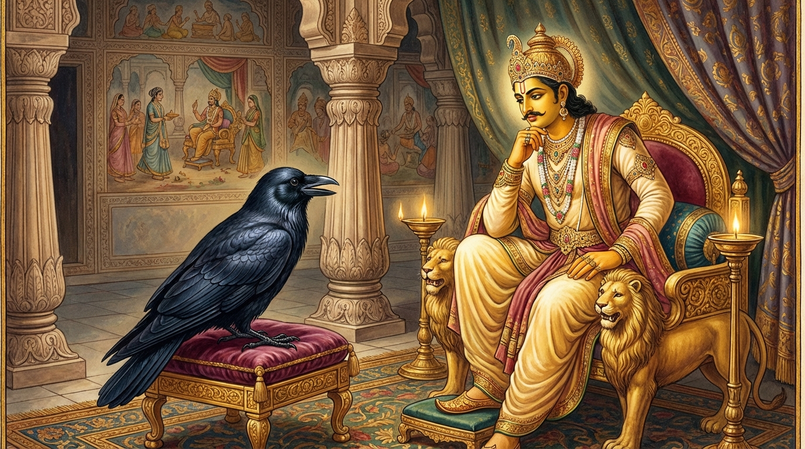

10. කාක ජාතකය (140)
“නිච්චං උබ්බිග්ගහදයා” (නිතර තැති ගත් හදවත් ඇත්තාහ) යන මේ ජාතක දේශනාව බුදුරජාණන් වහන්සේ ජේතවනාරාමයේ වැඩ වසන සේක්, ඥාති සංග්රහයක් (ඥාතීන්ට උපකාර කිරීමක්) අරබයා දේශනා කළහ. මෙහි වර්තමාන කථාව දොළොස් වැනි නිපාතයේ භද්දසාල ජාතකයේ (1.12.13 ආදියෙහි) හෙළි වනු ඇත.
අතීතයේ බරණැස් නුවර බ්රහ්මදත්ත රජු රාජ්යය කරන කල්හි බෝධිසත්වයෝ කපුටු යෝනියෙහි උපන්හ. ඉක්බිති එක් දිනක් රජුගේ පුරෝහිත බමුණා නගරයෙන් පිටත ගඟක නා, සුවඳ විලවුන් ගල්වා, මල් මාලා පැළඳ, ඉතා වටිනා වස්ත්ර හැඳ නගරයට පිවිසියේය. නගර දොරටු තොරණෙහි කපුටෝ දෙදෙනෙක් සිටියහ. ඔවුන්ගෙන් එක් අයෙක් අනෙකාට “යහළුව, මම මේ බමුණාගේ හිස මත අශූචි හෙළන්නෙමි” යි කීවේය. අනෙක් කපුටා “ඔබට එසේ කිරීමට නොසිතේවා! මේ බමුණා බලවතෙකි (ප්රභූවරයෙකි). බලවත් අය සමඟ වෛර බැඳීම පාපයකි. මොහු කිපුණේ නම් සියලු කපුටන් විනාශ කරන්නේය” යි කියා ඔහු වැළකීය. “මට එය නොකර සිටිය නොහැක” යි පළමු කපුටා කීවේය. “එසේනම් ඔබේ ක්රියාවෙන් ඔබම ප්රකට වනු ඇත” යි කියා අනෙක් කපුටා පලා ගියේය. පුරෝහිත බමුණා තොරණ යටට පැමිණෙත් ම, හුයක් ලෙලවන්නාක් මෙන් (නූලක එල්ලී පහත් වන්නාක් මෙන්) පහත් වී බමුණාගේ හිස මත වසුරු හෙළීය. බමුණා කිපී කපුටන් කෙරෙහි වෛර බැන්දේය.
එකල වැටුපට වී කොටන දාසියක් ගෙයි දොරකඩ අව්වේ වී අතුරා රකිමින් සිටින අතරතුර හිඳගෙනම නින්දට වැටුණාය. ඇගේ ප්රමාදය දැනගත් දිග ලොම් ඇති එළුවෙක් අවුත් වී කෑවේය. ඇය අවදි වී එය දැක එළුවා පන්නා දැමුවාය. ඇය නැවතත් නිදන අතරතුර එළුවා දෙවන වරත්, තෙවන වරත් අවුත් වී කෑවේය. ඇය තුන්වරක් ම ඌ පන්නා දමා මෙසේ සිතුවාය: “මොහු නැවත නැවතත් කන්නේ නම් වීවලින් අඩක්ම කා දමනු ඇත. එවිට මට (වැටුපෙන්) ලොකු කැපීමක් සිදුවනු ඇත. දැන් මොහුට නැවත නොඑන පාඩමක් උගන්වන්නෙමි.” ඇය ගිනි පෙනෙල්ලක් ගෙන නිදන්නාක් මෙන් හිඳගෙන, වී කෑම සඳහා එළුවා පැමිණි විට නැගිට ගිනි පෙනෙල්ලෙන් එළුවාට ගැසුවාය. එළුවාගේ ලොම්වල ගිනි ඇවිලිණි. සිරුර දැවෙන විට “ගින්න නිවා ගනිමි” යි සිතා ඌ වේගයෙන් ගොස් ඇත්හල සමීපයේ පිහිටි තණ කුටියක ඇඟ ඇතිල්ලුවේය. එය ගිනි ගත්තේය. එහි හටගත් ගින්නෙන් ඇත්හල ද ගිනි ගත්තේය. ඇත්හල දැවෙද්දී ඇතුන්ගේ පිටවල් ද දැවී ගියේය. බොහෝ ඇත්තු තුවාල වූහ. ඇත් වෙද්දුන්ට ඔවුන් සුව කළ නොහැකි වී රජුට ඒ බව දැන්වූහ. රජතුමා පුරෝහිතයා ඇමතීය: “ආචාර්යයෙනි, ඇත් වෙද්දුන් ඇතුන් සුව කළ නොහැකි බව කියති. ඔබ යම් බෙහෙතක් දන්නෙහිද?” “මහරජ, දනිමි” යි ඔහු පිළිතුරු දුන්නේය. “කුමක් ලැබීම වටී ද?” යි රජු ඇසීය. “මහරජ, කපුටු තෙල් (අවශ්යය)” යි කීය. රජතුමා “එසේ නම් කපුටන් මරා තෙල් රැගෙන එව්” යි නියෝග කළේය. එතැන් පටන් මිනිස්සු කපුටන් මරා, තෙල් නොලැබ, ඒ ඒ තැන මළකුණු ගොඩ ගැසූහ. කපුටන්ට මහා භයක් උපන්නේය.
එකල බෝධිසත්වයෝ අසූ දහසක් කපුටන් පිරිවරා මහා සොහොන් බිමෙහි වාසය කළහ. එවිට එක් කපුටෙක් අවුත් කපුටන්ට ඇති වී තිබෙන මහා විපත බෝධිසත්වයන්ට දැන්වීය. බෝසතාණෝ “මා හැර මාගේ ඥාතීන්ට උපන් මේ භිය දුරු කිරීමට සමත් වෙනෙකෙක් නැත. මම එය දුරු කරන්නෙමි” යි සිතා, දස පාරමිතාවන් සිහි කොට, මෛත්රී පාරමිතාව පෙරටු කරගෙන, අධික වේගයෙන් පියාඹා ගොස් විවෘතව තිබූ මහා කවුළුවකින් රජගෙට ඇතුළු වී රජුගේ ආසනය යටට රිංගා ගත්හ. එකල එක් මිනිසෙක් බෝසතුන් අල්ලා ගැනීමට සැරසුණේය. රජතුමා “මොහු සරණ පතා පැමිණියෙකි, අල්ලන්න එපා” යි කියා ඔහු වැළැක්වීය. මහාසත්වයෝ මදක් විඩා හැර, මෛත්රී පාරමිතාව මෙනෙහි කොට, ආසනය යටින් නික්ම රජුට මෙසේ පැවසූහ: “මහරජ, රජෙකු විසින් ඡන්දාදියට (සතර අගතියට) යටත් නොවී රාජ්යය කළ යුතුය. යම් යම් ක්රියාවක් කළ යුතු වේ නම්, ඒ සියල්ල නුවණින් විමසා බලා කළ යුතුය. යමක් කරන විට යහපත් ප්රතිඵල ලැබේ නම් එය කළ යුතුය, අනෙක නොකළ යුතුය. ඉදින් රජවරු ප්රතිඵලයක් නැති දේ කරත් ද, එයින් මහජනයාට මරණ බිය කෙළවර කොට ඇති මහා බියක් උපදී. පුරෝහිතයා වෛරයෙන් පෙළඹී බොරු කීවේය. කපුටන්ට තෙල් නම් නැත.” එය අසා රජු පැහැදුණු සිත් ඇත්තේ බෝධිසත්වයන්ට රන් පුටුවක් දී, එහි හිඳගත් කල්හි පියාපත් අතර සිය වරක් දහස් වරක් පැසූ තෙල් ගල්වා, රන් තැටියක රාජකීය භෝජන අනුභව කරවා, පැන් පොවා, සුවපත් වූ වෙහෙස නිවුණු මහාසත්වයන්ගෙන් මෙසේ ඇසීය: “පණ්ඩිතයෙනි, ඔබ ‘කපුටන්ට තෙල් නම් නැත’ යි කියන්නෙහිය. කවර හේතුවක් නිසා ඔවුන්ට තෙල් නැත්තේ ද?” එවිට බෝධිසත්වයෝ “මේ මේ හේතුව නිසාය” යි මුළු රජ මැදුර ඒක නින්නාද කරමින් ධර්මය දේශනා කොට මේ ගාථාව වදාළහ:

“කපුටෝ නිතරම තැති ගත් හදවත් ඇත්තෝය. සියලු ලෝකයාට හිරිහැර කරන්නෝය. එබැවින් අපගේ ඤාතීන් වන කපුටන්ට ශරීරයේ තෙල් හටගන්නේ නැත.”
මෙහි සංක්ෂිප්ත අර්ථය මෙයයි: “මහරජ, කපුටෝ නම් නිතරම තැතිගත් සිතින් යුතුව, බියට පත්ව වාසය කරති. එසේම ඔවුහු සියලු ලෝකයාට හිංසා පීඩා ගෙන දෙන්නෝ වෙති. රජුන් ආදී මනුෂ්යයන් ද, ස්ත්රීන් ද, පුරුෂයන් ද, කුමර කුමරියන් ද වෙහෙසට පත් කරමින්, පීඩා කරමින් හැසිරෙති. මේ කරුණු දෙක නිසා, මගේ ඤාතීන් වූ ඒ කපුටන්ට ‘වසා’ නම් වූ තෙලක් නැත්තේය. අතීතයේ ද නොවීය, අනාගතයේ ද නොවන්නේය.”
මෙසේ මහාසත්වයන් වහන්සේ මේ කාරණය මතු කොට දක්වා, “මහරජ, රජෙකු විසින් නොවිමසා, කරුණු පරීක්ෂා නොකර යම් ක්රියාවක් නොකළ යුතුය” යි රජුට අවබෝධ කරවූහ. රජතුමා සතුටු වී බෝධිසත්වයන්ට රාජ්යයෙන් පූජා කළේය. බෝධිසත්වයෝ රාජ්යය නැවත රජුටම භාර දී, රජුව පඤ්ච සීලයෙහි පිහිටුවා, සියලු සතුන්ට අභය දානය ඉල්ලා සිටියහ. රජතුමා උන්වහන්සේගේ ධර්ම දේශනාව අසා සියලු සතුන්ට අභය දානය දී, කපුටන්ට නිත්ය දානයක් පැවැත්වීමට නියම කළේය. දිනපතා සහල් අමුණක බත් පිස, නොයෙක් රසවත් දේ සමඟ මිශ්ර කොට කපුටන්ට දෙනු ලැබීය. මහාසත්වයන්ට වනාහි රජුට දෙන භෝජනයම දෙන ලදී.
ශාස්තෘන් වහන්සේ මේ ධර්ම දේශනාව ගෙනහැර දක්වා ජාතකය ගළපා වදාළ සේක. “එකල බරණැස් රජු වූයේ මේ ආනන්ද තෙරුන් ය. කපුටු රජු වූයේ මම ම ය.”
දස වැනි වූ කාක ජාතක වර්ණනාවයි.
දහහතර වැනි වූ අසම්පදාන වර්ගයයි.
එහි උද්දානය (සාරාංශ ගාථාව) මෙසේයි:
අසම්පදාන, භීරුක, ඝතාසන, ඣානසොධන, චන්දාභ, සුවණ්ණහංස, බබ්බු, ගොධ, උභතොභට්ඨ සහ කාකරාජ යනු එම දසයයි.